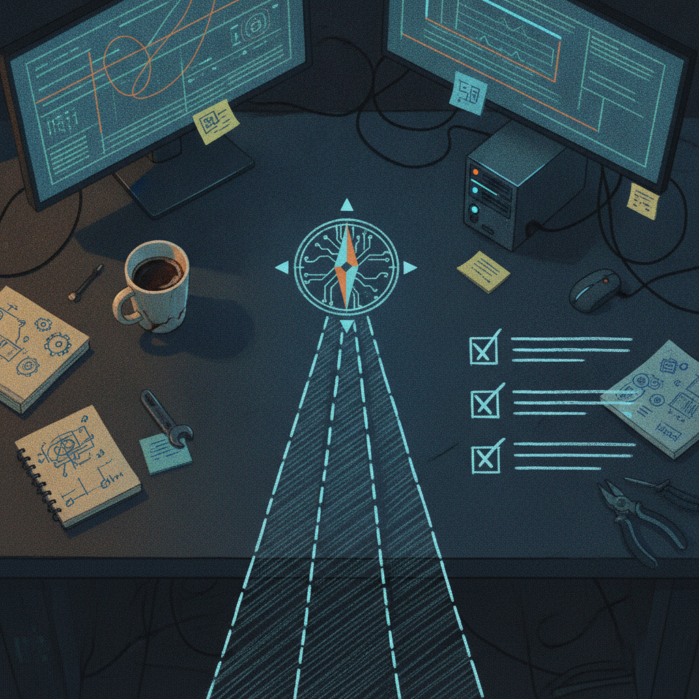

The Sinking Ship: Laying Down the Map Before the Build
The Sinking Ship is one of my repos on GitHub, and right now it is at the stage every project hits before it becomes a real thing: figuring out what it actually is and how the pieces fit together. This latest update is not a flashy feature drop, it is the scaffolding that makes the rest of the work possible.
What just shipped
I added a project dashboard to the repo. It lays out the overall direction, breaks the work into tracks, and gives the whole thing a master task list. That is the whole commit, and honestly that is the point. Before I write more code, I want a single place where I (and anyone poking around the repo) can see what is being built and what still needs to happen.

Why it matters
A lot of side projects die quietly because there is no map. You open the repo six weeks later and have no idea what you were thinking or what is left to do. A dashboard like this is cheap insurance against that. It also means if anyone else looks at The Sinking Ship on GitHub, they are not just staring at scattered files, they can see the tracks the project is moving on and where things stand.
Rick's take
I like starting projects this way. It is tempting to just start writing code the day an idea shows up, but I have learned the hard way that a project without a written-down direction turns into guesswork a few weeks in. Putting the tracks and task list into the repo itself, instead of some notes app only I can see, means the plan lives next to the code and grows with it. It is a small commit, but it is the kind of housekeeping that makes everything after it move faster.
What's next
With the dashboard in place, the next commits should start filling in actual tracks: real progress against the task list instead of just the list itself. I will keep posting updates here as pieces land.